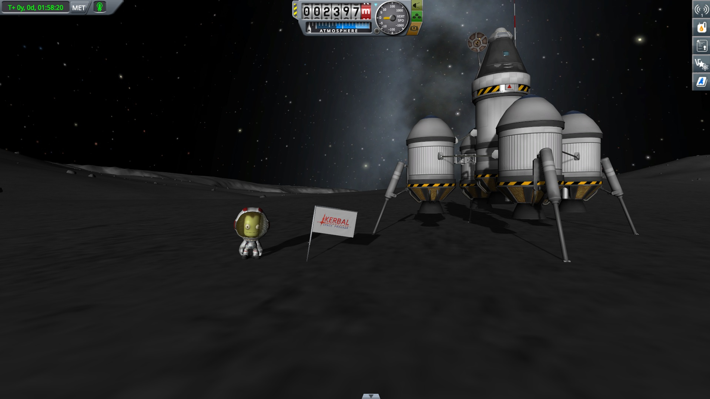
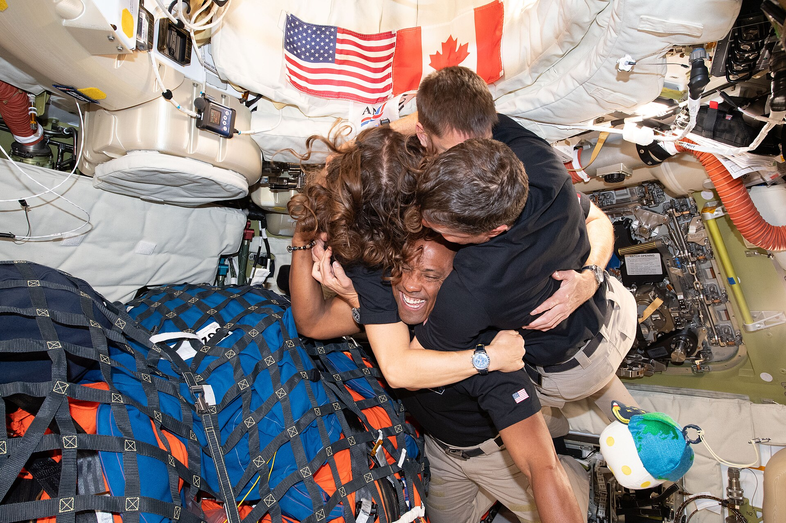

Hace ya medio año desde el despegue de la misión Artemis 2, que fue el primer regreso a la Luna desde Apollo 17, en 1972. Esta misión, que consiste en una trayectoria libre alrededor de la Luna (Es decir, que si hubiera habido algún problema durante el tránsito a la luna, la trayectoria de la nave les hubiera devuelto a la Tierra sin problema.) duró más de 9 días, además batió el récord de la mayor distancia a la que los humanos han estado de la Tierra.


Objetivos y progreso de la misión
La misión fue utilizada para poner a prueba sistemas para una posible misión de alunizaje futura, incluyendo el sistema autoinmune y si el equipamiento sobreviviría a misiones de larga duración, el más resaltable siendo un simulador de tejidos llamado AVATAR, que es capaz de simular incluso órganos individuales.
Conclusion y efectos
La misión Artemis 2 tuvo una oportunidad especial que no fue otorgada a las misiones Apollo. Los ojos de todo el mundo estaban en la misión, cualquiera con un móvil podía ver el progreso en directo, las personas podían ver fotos tal y como eran tomadas y en algunos casos incluso hablar en directo con la tripulación. Esto ha causado un efecto denominado por NASA como “felicidad lunar”, considerada como una gran felicidad causada por una misión a la Luna y creando un auge de interés en la exploración espacial, como proyectos de ciencia ciudadana, simuladores espaciales e incluso buscar carreras reales en el sector.
